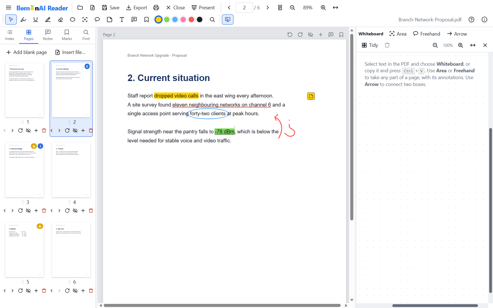
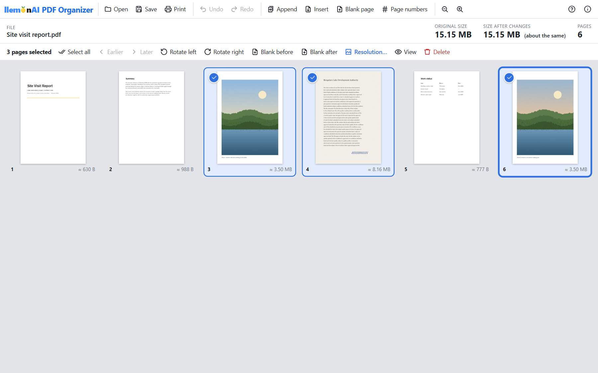

Applications, case files, reports and study notes often arrive as a mix of Word documents and PDFs. Sending one PDF is tidier, easier to read and harder to lose. This guide shows how to combine them into a single PDF, in the order you want, without uploading your documents to a website.
Why not use an online merge tool?
Online PDF tools upload your files to someone else's server. For a client's case file, an ID document or a salary slip, that's a risk you don't need to take. The free apps below do everything on your own computer or phone, and they work offline.
Method 1: llemonAI PDF Annotator (PDF and .docx, with bookmarks)
llemonAI PDF Annotator is a free PDF reader and annotator for Windows, macOS and Android. It's the better choice when you also want to read, mark up or present the combined file, and when you want a bookmark for each document, for example one per exhibit in a case file.
- Open the app with no document open.
- Click Append in the toolbar and choose your PDF and Word (.docx) files.
- The files are combined into one new PDF, and each file gets its own bookmark.
- To change the order, open the Pages tab and drag thumbnails, or use the < and > buttons under each thumbnail.
- To add another file later: Append adds it at the end, and Insert file… in the Pages tab adds it at the current page.
- Click Save.
Word files become real, searchable PDF text, keeping headings, paragraphs, bold and italic, lists, tables and pictures. Old Word 97–2003 .doc files aren't supported here: open them in Word and save as .docx first, or use Method 2.

Method 2: llemonAI PDF Shrinker (also .doc and .txt, and smaller files)
llemonAI PDF Shrinker is a free PDF organizer for Windows, macOS and Android. Use it when you have old .doc files or plain text files, or when the combined PDF ends up too big to email or upload.
- Open your first PDF.
- Click Append to add PDF, Word (.docx and .doc) or text (.txt) files at the end, or select a page and use Insert to add them after it.
- Drag pages into the order you want; select several pages at once to move, rotate or delete them together.
- Optional: click Page numbers to number every page of the combined document, for example "Page 1 of 24".
- Click Save.
Kannada, Hindi, Tamil and other Indian scripts in Word files show correctly. Old .doc files keep their text only (not their layout or pictures).

If the combined PDF is too big
Combined files get big when they include photos or scanned pages. In PDF Shrinker, select just those heavy pages and lower their resolution; text pages stay sharp. See how to reduce PDF size without blurring the text.
Which method should I use?
| You need | PDF Annotator | PDF Shrinker |
|---|---|---|
| PDF + .docx | Yes | Yes |
| Old .doc and .txt files | No (save as .docx first) | Yes |
| A bookmark for each file | Yes | No |
| Highlight, notes, presenting | Yes | No |
| Add page numbers | No | Yes |
| Shrink heavy pages | No | Yes |
Common problems
- A Word file looks different in the PDF: unusual fonts or complex layouts may shift slightly. For a document whose exact layout matters, save it as PDF from Word first (File → Save As → PDF), then combine the PDFs.
- A .doc file won't open in PDF Annotator: save it as .docx in Word, or use PDF Shrinker.
- A password-protected PDF can't be combined: remove the password with the tool that set it (you need to know the password), then combine.
Quick checklist
- Put the files in one folder; rename them in the order you want.
- PDF Annotator: Append with no document open; one bookmark per file.
- PDF Shrinker: for .doc and .txt, page numbers, or a smaller file.
- Reorder pages, then Save.
Try it free: llemonAI PDF Annotator
Free for Windows 10/11, macOS 12+ and Android. Combine PDF and Word files, annotate, search and present. No installer, no account, no upload.
Download PDF Annotator